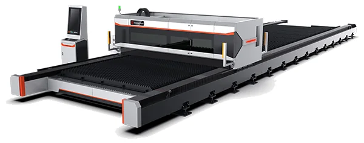
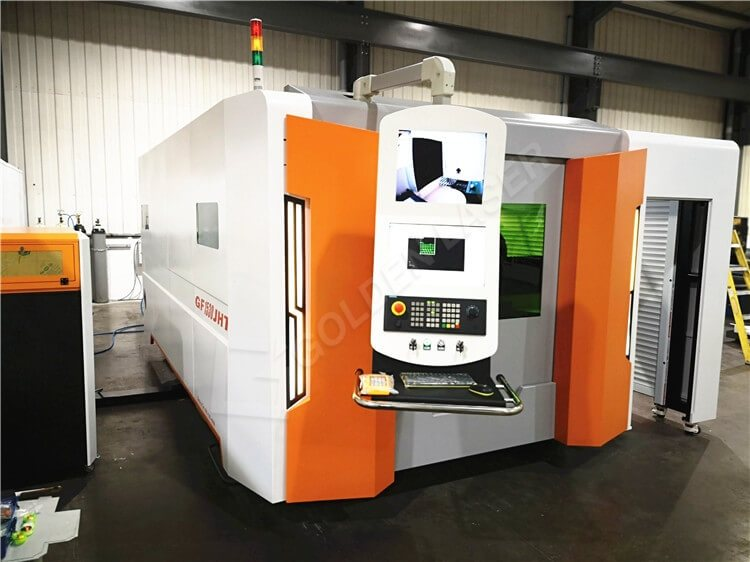
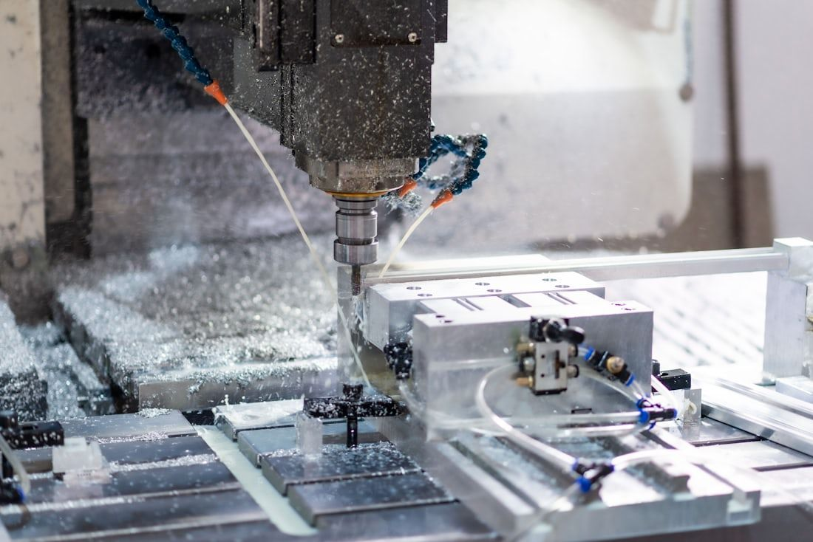

TO.DE.L. Automazione Industriale, già Automazione Macchine Utensili, ha sede a Battipaglia (SA). Vendiamo, installiamo e assistiamo macchine per la lavorazione della lamiera.
Anni nel settore delle macchine e dell’automazione industriale
oltre30
Macchinari venduti
oltre100
Impianti plasma venduti
almeno40
Sistemi laser venduti, in diverse configurazioni
oltre20
Esperienza nel taglio laser
quasi10anni
Golden Laser
Rivenditore ufficiale
Dati aziendali TO.DE.L.
Hanno scelto TO.DE.L.
Cerbone
3G MetalCarpenteria metallica
MGRLavorazioni meccaniche
General ServiceManutenzione industriale
Car SegnaleticaLavorazioni e segnaletica
Macchine Golden Laser per lamiera, tubo e saldatura
Siamo rivenditore ufficiale: vendiamo, installiamo e assistiamo la gamma Golden Laser, dalla scelta della configurazione alla manutenzione.

piano fino a 12000 mm, serie M
Banco aperto, grande formato · foto Golden Laser
Taglio lamiera
Lamiere in acciaio al carbonio, inox, alluminio, ottone e rame. Dal formato 1500 × 3000 mm al grande formato, fino a 30 mm di spessore.
Serie
U3, E3, GF, M
Sorgente
da 1,5 a 30 kW
Formato
1500 × 3000 → 2500 × 12000 mm
Spessore
fino a 30 mmacciaio al carbonio, U3 con sorgente da 8 kW
Saldatrice portatile 3 in 1, serie W · foto Golden Laser
Saldatura e pulizia laser
Saldatrici laser portatili 3 in 1: saldano, puliscono e tagliano con la stessa sorgente. Per la sola pulizia, le pulitrici laser della serie Clean. Per i lavori in serie, la saldatura laser con braccio robotico.
Modelli
W15, W20, W30portatili; con braccio robotico: serie R
Sorgente
1,5, 2 e 3 kW
Velocità
fino a 120 mm/s
Spessore
fino a 3 mm (W15) · 5 mm (W20)saldatura, dati Golden Laser
Per partire con un investimento più contenuto. La disponibilità cambia spesso: chiedeteci cosa c’è adesso.
Approfondisci
Che spessore taglia un laser fibra?
Dipende dal materiale e dalla potenza della sorgente. Scegliete cosa lavorate: questi sono i valori massimi della serie Golden Laser U3.
22 mm3 kW
25 mm4 kW
25 mm6 kW
30 mm8 kW
40 mm12 kW
60 mm20 kW
Acciaio al carbonio: da 22 mm con 3 kW a 60 mm con 20 kW. Valori massimi di taglio dalla scheda tecnica ufficiale Golden Laser U3, disegnati in scala. La qualità del bordo dipende da gas, parametri e materiale: nel preventivo indichiamo il modello esatto.
Foto da inserire: campioni di taglio Golden Laserlaser-cutting-metal-sheet-sample-600-1.jpglaser-cutting-tube-600-1.jpg8000w-fiber-laser-cutting-carbon-steel-30mm.jpg
I settori che seguiamo
Carpenteria metallica
Tagliare e piegare in casa lamiere di spessori diversi, con i tempi di consegna sotto controllo.
Scegliere la macchina è metà del lavoro. L’altra metà è installarla bene e tenerla in produzione negli anni: dalla scelta all’assistenza parlate sempre con noi.
Non parlate con un catalogo. Parlate con chi sceglie, installa e segue il vostro impianto.
Un investimento industriale va valutato anche dal punto di vista finanziario.
Vi affianchiamo nella valutazione dell’acquisto: modalità, strumenti disponibili e documenti necessari. Verifichiamo caso per caso cosa si applica alla vostra azienda.
La mappa viene caricata da Google solo se la chiedete.
Richiesta inviata
Vi rispondiamo entro 24 ore. Se è urgente, chiamateci al 328 824 1909.
Golden Laser · rivenditore ufficiale
Taglio laser fibra
Lamiere, tubi e profili tagliati da una sorgente laser in fibra. Spessori fino a 30 mm, in funzione di macchina, potenza, materiale e configurazione.

GF-1530JHT in officina · foto Golden LaserSimulazione · pezzi disposti su una lamiera di produzione
Come funziona
Il disegno del pezzo diventa un percorso: il software dispone i pezzi sulla lamiera.
La testa fora la lamiera fuori dal profilo, entra sul contorno e lo segue.
Prima i fori interni, poi il contorno esterno: il pezzo si stacca finito.
Materiali
Acciaio al carbonio
Acciaio inox
Alluminio
Ottone e rame
Acciaio zincato
Configurazioni che trattiamo
Famiglia
Modelli
Potenze
Formato
Lamiera, doppio piano
U3
3-30 kW
1500 × 3000 mm
Lamiera
E3
1,5-6 kW
in base alla configurazione
Lamiera, grande formato
GF
4-10 kW
2500 × 6000 / 2500 × 8000 mm
Lamiera, alta potenza
Serie M
20-30 kW
da 2000 × 4000 a 2500 × 12000 mm
Lamiera e tubo
E3t Plus
1,5-4 kW
1500 × 3000 mm · tubo Ø 20-200 mm
Lamiera e tubo
GF-1530JHT
1-4 kW
da 1500 × 3000 mm · tubo Ø 20-160 mm
Tubo
i25 / i35
1,5-6 kW
tubo tondo Ø 20-250 / Ø 20-350 mm · 6 m
Tubo 3D, 5 assi
i25A-3D / i35A-3D
in base al modello
taglio obliquo fino a 45°
Tubo
S12R, Mega4, L12MAX / L16MAX / L20MAX
in base al modello
in base al modello
Spessori massimi, serie U3
Materiale
3 kW
6 kW
8 kW
Acciaio al carbonio
22 mm
25 mm
30 mm
Acciaio inox
12 mm
16 mm
20 mm
Alluminio
8 mm
16 mm
18 mm
Ottone
8 mm
16 mm
18 mm
Fonte: schede tecniche ufficiali Golden Laser (goldenlaser.com e goldenfiberlaser.com). Valori massimi di taglio: la qualità del bordo dipende da gas, parametri e materiale. Con potenze superiori gli spessori aumentano: li indichiamo nel preventivo, con il modello esatto.
Tubi e profili per strutture e arredo, con le serie lamiera e tubo
Componenti in inox per l’agroalimentare
Cosa ottenete
Fori, asole e contorni nello stesso ciclo di taglio
Lamiera e tubo sulla stessa macchina, con le serie E3t Plus e GF-JHT
Installazione, formazione e assistenza dai tecnici TO.DE.L.
Tecnologia complementare
Piegatura e cesoie
Pressopiegatrici e cesoie per completare il reparto lamiera: tagliate a misura, poi piegate il pezzo con l’angolo richiesto.
Foto da inserirepressopiegatrice in officina · 4:3, almeno 1600 px
Schema · punzone, matrice a V e angolo di 90°
Come funziona
La lamiera appoggia sulla matrice a V, contro i registri posteriori.
Il punzone scende e spinge la lamiera dentro la V.
L’angolo finale dipende dalla corsa del punzone e dall’apertura della matrice.
Materiali
Acciaio al carbonio
Acciaio inox
Alluminio
Applicazioni
Pezzi tagliati al laser o al plasma da piegare a misura
Profili, staffe, carter e lamiere per carpenteria
Dati tecnici
Lunghezza di piega, forza e corsa dipendono dal modello: ve li indichiamo nel preventivo, in base agli spessori e alle lunghezze che lavorate.
Tecnologia complementare
Taglio plasma
Banchi CNC con torcia al plasma per tagliare lamiere di forte spessore. TO.DE.L. ha venduto almeno 40 impianti plasma.
Immagine illustrativaSimulazione · taglio plasma di una piastra
Come funziona
Un arco elettrico ionizza il gas e lo porta a temperature che fondono il metallo.
La torcia fora la lamiera e segue il percorso a pochi millimetri dalla superficie.
Il getto di gas espelle il metallo fuso sotto la lamiera.
Materiali
Acciaio al carbonio
Acciaio inox
Alluminio
Applicazioni
Carpenteria pesante e strutture per l’edilizia
Piastre di base, flange e lamiere di forte spessore
Dati tecnici
Spessori, formato del banco e generatore dipendono dalla configurazione: ve li indichiamo nel preventivo.
Golden Laser · rivenditore ufficiale
Saldatura e pulizia laser
Saldatrici laser portatili 3 in 1 della serie W: saldano, puliscono e tagliano con la stessa sorgente. Per la sola pulizia, le pulitrici laser della serie Clean.
Serie W · foto Golden LaserSchema · saldatura con oscillazione, poi pulizia del cordone
Come funziona
Il fascio laser fonde i due lembi lungo il giunto; la testa oscilla per allargare il cordone.
Il trainafilo automatico aggiunge materiale quando serve.
Cambiando funzione, lo stesso fascio pulisce il cordone e toglie ossidi e colorazioni.
Dati tecnici, serie W
Modello
W15
W20
W30
Potenza della sorgente
1,5 kW
2 kW
3 kW
Spessore massimo di saldatura
3 mm
5 mm
non indicato
Funzioni
Saldatura, pulizia, taglio
Oscillazione del fascio
0-5 mm
Velocità di saldatura
0-120 mm/s
Larghezza di pulizia
20 mm (opzionale 50-150 mm)
Fibra
10 m
Trainafilo
automatico
Raffreddamento
ad acqua
Fonte: schede tecniche ufficiali Golden Laser (goldenlaser.com e goldenfiberlaser.com). Pulitrici serie Clean: potenze e dati nel preventivo.
Materiali
Acciaio al carbonio
Acciaio inox
Alluminio
Acciaio zincato
Ottone e rame
Titanio
Applicazioni
Carpenteria in inox e acciaio, telai, contenitori
Pulizia del cordone di saldatura e delle superfici da trattare
Tecnologia complementare
Automazione e cobot
Robot industriali e collaborativi per le operazioni ripetitive: lo stesso movimento, nella stessa posizione, a ogni ciclo.
Immagine illustrativaSchema · carico e scarico ripetitivo
Come funziona
Analizziamo il ciclo: quali operazioni si ripetono e con quali tempi.
Definiamo la cella: robot o cobot, pinze, postazioni di carico e scarico.
Installiamo, programmiamo e formiamo chi lavora accanto al robot.
Applicazioni
Carico e scarico di macchine
Manipolazione e asservimento di linee
Operazioni ripetitive del reparto
Dati tecnici
Portata, sbraccio e modello dipendono dal ciclo da automatizzare: ve li indichiamo nel preventivo.
Servizio
Retrofit CNC
Un nuovo controllo numerico su una macchina con meccanica ancora valida: la macchina torna aggiornata senza essere sostituita.

Immagine illustrativaSchema · meccanica invariata, nuovo controllo
Come funziona
Verifichiamo lo stato della meccanica e cosa vale la pena aggiornare.
Installiamo il nuovo controllo numerico e lo colleghiamo alla macchina.
Collaudiamo e formiamo gli operatori sul nuovo controllo.
Quando conviene
La meccanica è buona, ma il controllo è superato o senza ricambi
Volete programmare la macchina con strumenti attuali
Dati tecnici
Il controllo e gli interventi dipendono dalla macchina: li definiamo dopo il sopralluogo.
Usato
Macchinari usati
Macchine usate per partire con un investimento più contenuto. La disponibilità cambia spesso: chiedeteci cosa c’è in questo momento e per quale lavorazione.
Usiamo cookie tecnici per far funzionare il sito. Con il vostro consenso usiamo anche strumenti di statistica per capire quali sezioni sono utili. Cookie policy